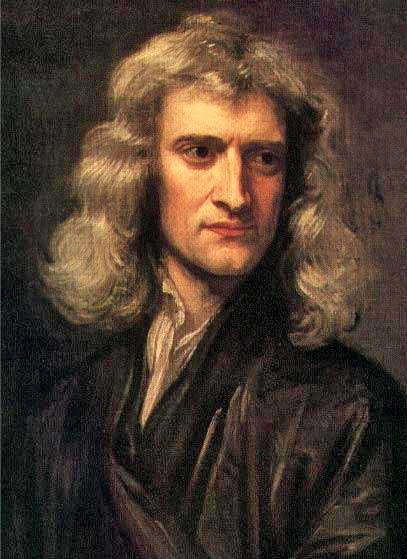

Source: WikipediaIf you study anything related to mathematics, physics, or statistics, his name appears everywhere. It's inescapable. What did you manage to accomplish during quarantine? When Cambridge closed down for two years due to the Great Plague, Newton quarantined himself in his home and laid out the foundations of calculus, optics and statistics. Perhaps his greatest contribution is the entire field of mechanical physics, which stemmed from the most acclaimed physics publication of all time, Mathematical Principles of Natural Philosophy. It's easy to see why he is labeled as the greatest mind of the 17th century Scientific Revolution. He was accepted to Trinity College, Cambridge by influence of his uncle, an alumni, though proved to be an average student in the beginning. However, he progressed quickly, earning his Master's of Arts in just one year and spending his free time reading about the philosophers of his era, the pioneers of the Scientific Revolution: Copernicus, Galileo, Kepler. The legendary legend has it that he was sitting under an apple tree when a stray fruit hit him, causing him to wonder why the apple fell straight down and not at an angle. He was considered upon his death the greatest mind in all of history; he was head and shoulders above the rest of the brilliant minds during his time, and he even predicted some shortcomings in his work which came to fruition during Einstein's era. Newton was pulled out of school at age twelve to become a farmer, but he returned shortly after complaining about the monoteneity of farming. I do not want to image what humanity would look life if he did not give up farming.